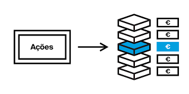
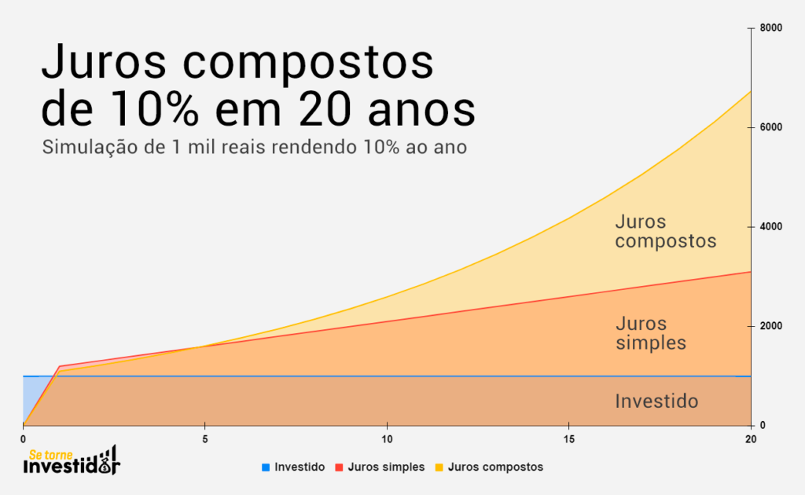
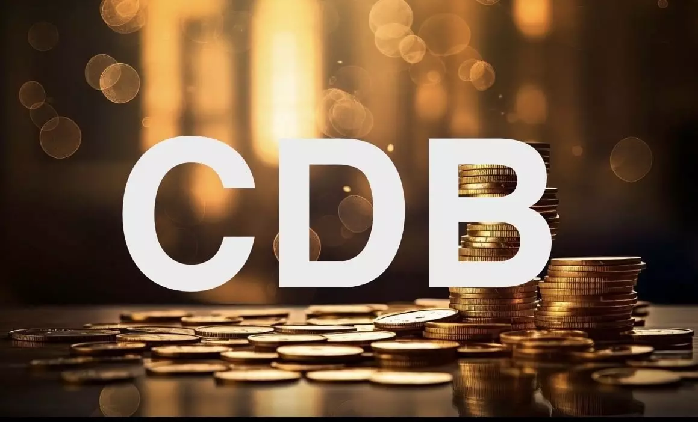
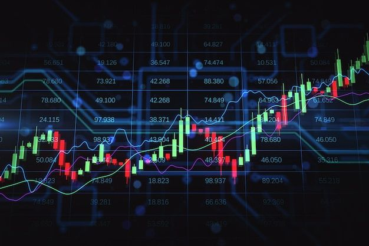

Identificar os mecanismos e processos de funcionamento de acumulação de capital e descrever seu funcionamento

2025
A acumulação de capital na bolsa de valores é o processo de aumento de riqueza por meio da negociação de valores mobiliários como ações, títulos commodities, contratos e outros produtos financeiros. A maior parte dessas movimentações são baseadas em ações, e por isso vamos explicar elas para você juntamente com outros conceitos e estratégias fundamentais do mercado financeiro:
O que são ações? Como funcionam?
As ações representam frações do capital de uma empresa que são negociadas no mercado financeiro. Quando os investidores compram ações, eles se tornam acionistas, ou seja, passam a ter uma pequena participação na empresa, semelhante a um sócio, mas sem poder de gestão. Esse é um tipo de investimento de renda variável.
Se a empresa obtiver lucro, ela pode optar por distribuir parte desse valor aos acionistas na forma de dividendos. Essa distribuição ocorre proporcionalmente à quantidade de ações que cada investidor possui, ou seja, quem detém mais ações recebe uma parcela maior dos lucros.
Além disso, se a empresa crescer e se tornar mais valorizada no mercado, o preço de suas ações pode subir. Nesse caso, os investidores podem vender suas ações por um preço maior do que pagaram, obtendo lucro com a valorização do ativo.
Juros compostos
Aplicações como CDBs, LCIs, LCAs e Tesouro Direto pagam juros sobre o capital investido, e esses juros podem ser compostos. Isso significa que, ao investir R$1000, por exemplo, a uma taxa de 7% ao mês, no primeiro mês seu investimento renderia R$70, totalizando R$1070. No mês seguinte, os juros seriam calculados sobre R$1070 e não sobre os R$1000 iniciais. Esse processo de calcular juros sobre o saldo acumulado é a base dos juros compostos, e sua principal vantagem é que os juros gerados aumentam com o tempo, fazendo o investimento crescer de forma exponencial. Destacamos a seguir uma breve explicação sobre as rentabilidades CDB e Tesouro Direto
CDB
O CDB é um investimento de renda fixa emitido por bancos. Você empresta dinheiro ao banco e, depois de um prazo determinado, recebe o valor de volta com juros e sua rentabilidade pode ser pré-fixada ou pós-fixada.
Na rentabilidade pré-fixada, a taxa de lucro é definida no momento do investimento e permanece fixa até o vencimento. Isso garante previsibilidade, pois o investidor sabe exatamente quanto receberá. Essa opção pode ser vantajosa caso os juros caiam, mas desvantajosa se os juros subirem, pois a taxa não será ajustada. Além disso, esses investimentos costumam ter baixa liquidez, ou seja, o dinheiro fica preso até o vencimento. É ideal para quem busca segurança e estabilidade.
Já na rentabilidade pós-fixada, o retorno varia conforme um índice, geralmente o CDI (Certificado de Depósito Interbancário). Isso significa que o investidor só saberá o rendimento exato no momento do resgate, pois ele acompanha as oscilações do mercado. Diferente da modalidade pré-fixada, essa opção se ajusta às variações dos juros, o que pode ser benéfico em períodos de alta, mas menos lucrativo se os juros caírem. Por ser imprevisível, costuma ser mais interessante em cenários de juros elevados.
Tesouro Direto
O Tesouro Direto é um programa que permite a compra de títulos públicos por pessoas físicas, com valores de investimento baixos. Nesse programa, os investidores emprestam dinheiro ao governo, que se compromete a devolver o valor investido com juros. Esse dinheiro é utilizado pelo governo para financiar suas atividades, o que torna esses investimentos mais seguros e confiáveis.
Entre os títulos oferecidos pelo programa, destacam-se:
- Tesouro Selic, considerado o mais seguro, sendo ideal para reservas de emergência.
- Tesouro Prefixado, que oferece rentabilidade fixa, sendo uma boa opção para quem busca previsibilidade.
- Tesouro IPCA+, que está atrelado à inflação, recomendado para investimentos de longo prazo.
- Tesouro RendA+, que permite renda planejada por períodos mais longos.
Dinamismo da Especulação e do Trading
Esses são um dos termos mais conhecidos do mercado financeiro, até mesmo para as pessoas fora desse contexto. Mas, muitas vezes, eles não são totalmente compreendidos.
A especulação financeira é uma estratégia em que o investidor compra e vende ativos frequentemente com base na expectativa de que seus preços se valorizem ou desvalorizem em um curto período de tempo. Essa abordagem envolve tentar prever o futuro dos ativos e pode resultar em grandes lucros, mas também traz altos riscos, já que as previsões nem sempre se confirmam.
Trading
O trading é uma forma de especulação que envolve a compra e venda de ativos de forma frequente. Dentro do trading, existem diferentes estilos:
- Day Trade: negociações que começam e terminam no mesmo dia, com o objetivo de aproveitar as flutuações do mercado no curto prazo.
- Swing Trade: envolve negociações de curto a médio prazo, com o objetivo de capturar tendências de mercado em dias ou semanas.
- Robôs Trade: sistemas automatizados que monitoram o mercado e executam transações de compra e venda com base em uma programação pré-definida, facilitando negociações rápidas e frequentes.
Existem outras formas de especulação, como a flipagem, mas essas são as mais conhecidas tanto por investidores quanto para a população em geral.
Abaixo, você encontra as fontes que usamos para reunir as informações desta página:
Inteligências Artificiais (IA), como o ChatGPT e o Copilot, foram utilizadas nesta página para revisar e aprimorar a coesão do texto, garantindo mais fluidez e precisão nas informações.
 GIGANTESCO BAHIA
GIGANTESCO BAHIA